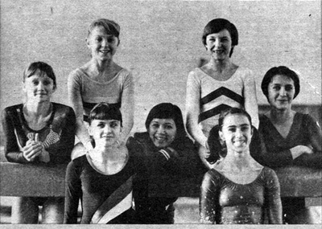

Natalia Tereshchenko (USSR)
1978 American Cup Champion

Medal Total
World Championships: 1 Silver
Competition Results
1975
Jr. USSR Championships: 1st AA, 1st FX, 2nd V, 3rd B (Candidate for
Master of Sport)
1976
All-Union School Spartakiade: 2nd AA, 1st V, 3rd FX
Jr. Friendship Tournament (Druzhba): 1st Team, 5th AA
Jr. USSR Championships: 2nd Team, 3rd V, 3rd FX
Jr. USSR Cup: 2nd AA, 1st V
1977
All-Union Youth Sports Games: 2nd Team, 2nd AA, 1st V, 2nd B, 3rd FX
Cup of Siberia and the Far East: 1st AA
Jr. Friendship Tournament (Druzhba): 1st Team, 1st AA, 1st V, 1st UB, 1st
FX
Jr. USSR Championships: 2nd Team, 2nd AA, 1st V, 1st B, 1st FX, 2nd UB
RSFSR Championships: 1st AA, 1st V, 1st FX
USSR Championships: 7th AA
USSR Cup: 5th AA, 2nd V, 4th FX, 7th UB
1978
American Cup: 1st AA
Riga International: 2nd AA, 1st V, 2nd B, 3rd UB
USSR Championships: 15th AA
1979
USSR Championships: 3rd AA, 3rd V
USSR Spartakiade: 6th AA
World Championships: 2nd Team
1980
USSR Championships: 21st AA, 4th V
This page was created on September
28, 2002 and was last updated on August 25, 2007.
© Gymn Forum